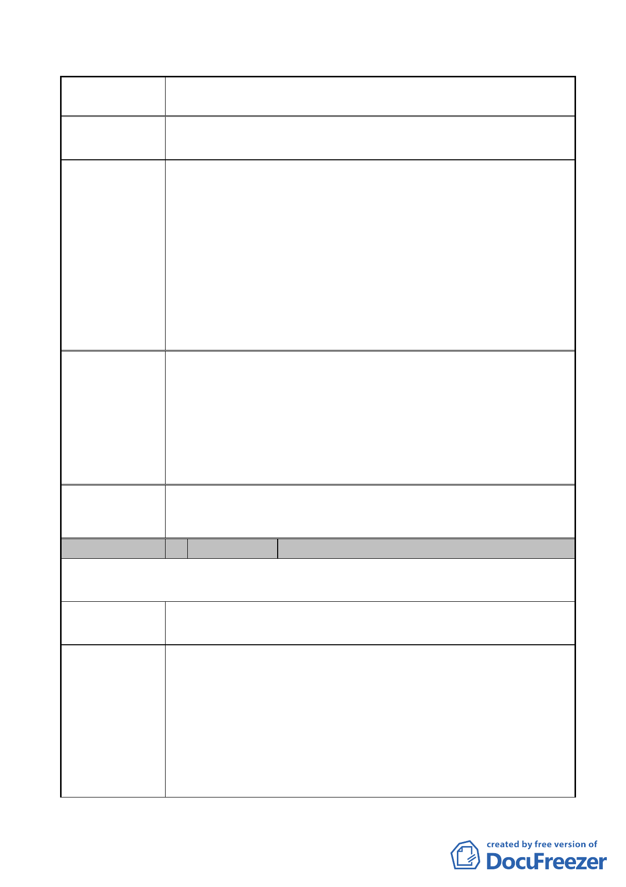

案名
變更臺北市內湖區石潭段四小段 280、281、281-1 地號等三筆
土地國中、國小用地為體育場用地及道路用地主要計畫案
陳情地點
陳情理由及建
議辦法
市府回應說明
1.基於對稱原則，體育場用地西側道路為 17 公尺，東側僅規劃
11 公尺，顯不符合比例；且未來商業區配合體育場用地發展，
經濟活動較住宅區活躍且車流量更大，似應依比例劃設道路
寬度。
2.考量未來體育中心舉辦國際賽事時有龐大車流且遊覽車等大
小型車輛臨時停靠將造成附近交通壅塞，影響商業區商業活
動之進行與發展，敬請惠賜考量將體育場用地東西二側道路
改為四線道以應需求。
3.請貴局惠予錄案納入此次審議中，並同意陳情人於召開臺北
市都市計畫委員會議時，列席旁聽並陳述意見。
1. 有關兩側道路拓寬之寬度設計，業已將未來舉辦大型賽會期
間衍生之交通流量納入考量。
2. 目前體育場用地西側道路車道係規劃雙向兩車道，東側道路
則規劃雙向單車道。
3. 有關建議 3，本市都市計畫委員會皆依「臺北市都市計畫委
員會都市計畫審議旁聽及登記發言規定」，通知陳情人到場
或發言，並彙製成綜理表錄案。
委員會
決議
同編號 1 陳情意見委員會決議。
編號
5 陳情人
芳鄰社區
101.8.22. 第 1 次陳情
陳情地點
陳情理由及建
議辦法
各位專案小組委員公鑒：頃接貴會開會通知，貴專案小組
擬於 101 年 8 月 22 日下午 2 時開會乙事，有關貴委員會擬「變
更台北市內湖區石潭段四小段 280、281、281-1 地號等三筆土
地國中、國小用地為體育場用地及道路用地主要計畫案」乙事，
茲經本社區住戶共同決議，特別提出如下問題，敬請慎重考慮：
1.本規劃案與附近居民溝通嚴重不足，根據「台北市網球中心
新工程環境影響說明書」之說明，本計劃曾於民國 100 年 11
月委託政大統計系鄭宇庭教授針對鄰近地區之居民進行問卷
- 32 -